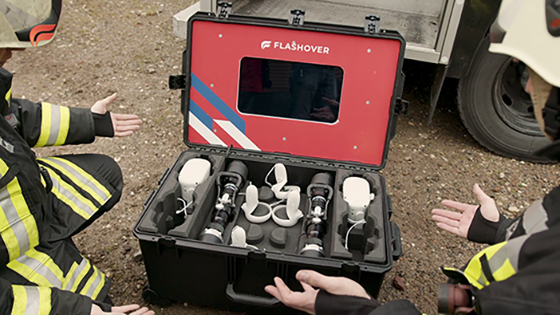

Flashover (graduation project)
Flashover is a Virtual Reality simulator, in which the fire department can practice fire hazards and fire fighting. I designed "Mijn Flashover Bibliotheek" for Flashover, to help the fire department navigate independently through Flashover. This was the final project for my bachelor’s degree Communication And Multimedia Design.
For a more detailed overview of the process, please take a look at the Design Rationale (Dutch). For all steps that were taken during the process, I’d like to refer to the Product Biography (Dutch).
The design challenge
The VR Simulation is integrated in a fully equipped suitcase with the necessary hardware such as a laptop, internet, power and a screen to watch. The problem is that the VR case is not user-friendly enough; the target group does not know how to proceed with it. They also have difficulty starting the VR simulation independently and playing scenarios themselves. For these reasons, they do not use Flashover.
The challenge was to help the target group, which is the fire department, to use the Flashover VR simulation independently, so that they can start the program and play a scenario without asking for any help.
During the research phase, I quickly realised that the fire department crew was very sceptical about training in a virtual reality world. And they're used to acting quickly, so it's very inconvenient to them if something doesn't work and it causes any delay.
So the question I asked myself was: "How can I design something that restores the user's trust in technology and how can I design the UI and tone of voice to be as friendly as possible?"
After I mapped out the problem in the exploration phase, I defined it with a design challenge. My design challenge is: “How can the fire brigade be guided through a digital interactive product in Flashover, so that they independently start the program to play out a scenario?”
The process
I kept in touch with the product owner from the fire department to map out the interests of the users. I also conducted interviews with firefighters from various barracks in the Netherlands to gain as much insight as possible about the target group. I applied the following CMD research methods during this project:
- Customer Journey Mapping: to get a visual picture of the user journey, I put the current situation in a customer journey Product Biography (p.31).
- Stakeholder mapping: I drew a visual representation of all the stakeholders involved in the project and their level of influence.
- Deskresearch: The product owner informed me that the target group has a low digital background. As a result, I read a study by Unesco (2018) about how designers can adhere to guidelines to design for people with a low digital background.
- Interviews: I conducted interviews with the product owner from the fire department and also with several firefighters to find out what their needs and wants are.
- Wireframing: I always start my design process with wireframing first and then testing it with the target group, to ensure that I am heading the right direction before putting a lot of time into full mockups of the user interface.
- Usability testing: I conducted several usability tests, and added an open conversation during all of the tests to gain more understanding of the users.
- Validation: At the end of the project I applied user validation to determine whether the project meets the expectations of the user, addressing their needs and concerns.
Design decisions
- The interface is recognizable, just like everyday applications
- The design of the interface is not busy and I kept it very simple with signposts
- The solution does not put much cognitive strain on the target group
- I transformed the complex tasks into simple tasks through videos and accompanying text
- There is a flow of feedback between the user and the company when the user is stuck
Style elements
I made a style guide based on Flashover's house style to make the design process easier for myself. I also took into account that the design was as minimalistic as possible.
As you can see on the image above, the UI looks very minimalistic, I used off-white in the background to ensure a sort of coziness inside the application.
The end product
As a result of my research, I designed Mijn Flashover Bibliotheek: an application that offers the fire department support to use the VR application Flashover without any problems. My solution contains the steps that the target audience follows when they use Flashover. If they are stuck somewhere, they have this tool to find the answer to their questions.
Furthermore, as a 2nd option, there is an extra page in which their questions could also be answered. If that is not enough, they can still contact us via the application to receive the needed help.
When they encounter a problem, the journey of use is interrupted. The goal of my solution is to reduce this interruption time so that the motivation line remains high. And that the target group uses Flashover to train.
Prototype
I have developed my concept in a prototype below. Feel free to test out my prototype.
Reflection
I had no knowledge and experience with VR and the target group. As a designer, immersing myself in a subject and target group of which I have no knowledge makes the project challenging. In addition, this has changed my view of people and virtual reality. The firefighters I approached during my graduation project were the most attentive and warmest people I've ever done research with. They were eager to provide me with feedback and answer my questions. Using virtual reality can also help the fire brigade to keep their digital skills up to date and this also saves them their health, because they are less exposed to hazardous chemicals in this way.
At the start of my graduation project I was unsure how I would solve the design challenge. As time went by in the process and I got into the process of conceptualizing and engaging with the target audience, it became clearer to me how I would answer the design challenge.
By conducting interviews and conversations with the target group, I felt inspired by them every time. This profession is not about making money. The firefighters do this job because they genuinely want to help people. And just like the fire brigade, I want to do something in my future career that helps people.
I would say this was a great project to end my school career and I am very thankful to have experienced this.